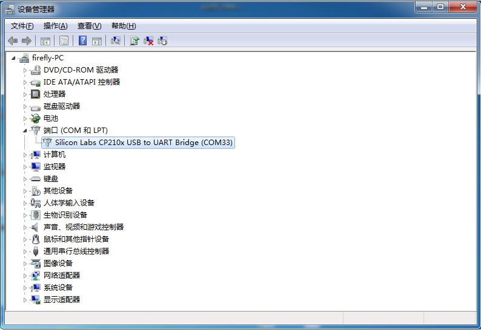
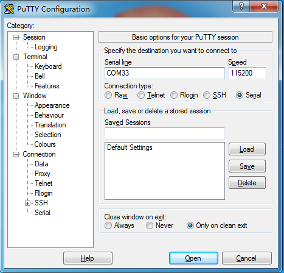

串口调试
注意事项
Firefly-RK3128 开发板的调试串口与 TF 卡接口有信号引脚复用，因此无法同时使用，即： 使用调试串口时必须拔掉 TF 卡，而使用 TF 卡时不要连接调试串口。
选购适配器
网店上有许多USB转串口的适配器，按芯片来分，有以下几种：
CP2104
PL2303
CH340
一般来说，采用 CH340 芯片的适配器，性能比较稳定，价格上贵一些。
硬件连接
串口转 USB 适配器，有四根不同颜色的连接线：
红色：3.3V 电源，不需要连接
黑色：GND，串口的地线，接开发板串口的 GND 针
白色：TXD，串口的输出线，接开发板串口的 TX 针
绿色：RXD，串口的输入线，接开发板串口的 RX 针
连接参数
Firefly-RK3128 使用以下串口参数：
波特率：115200
数据位：8
停止位：1
奇偶校验：无
流控：无
Windows 上使用串口调试
安装驱动
下载驱动并安装:
如果在 Win8 上不能正常使用 PL2303，参考这篇文章， 采用 3.3.5.122 或更老版本的旧驱动即可。插入适配器后，系统会提示发现新硬件，并初始化，之后可以在设备管理器找到对应的 COM 口： 
安装软件
Windows 上一般用 putty 或 SecureCRT。其中 putty 是开源软件，在这里介绍一下，SecureCRT 的使用方法与之类似。到这里3下载 putty，建议下载 putty.zip，它包含了其它有用的工具。解压后运行PUTTY.exe，选择 Connection type（连接类型）为 Serial（串口），将 Serial line（串口线）设置成设备管理器所看到的 COM 口，并将 Speed（波特率）设置为 115200，按 Open（打开）即可:

Ubuntu 上使用串口调试
在 Ubuntu 上可以有多种选择：
picocom
minicom
kermit
picocom 的使用比较简单，以下就介绍 picocom，其它软件也是类似的。安装：
sudo apt-get install picocom
连接好串口线的，看一下串口设备文件是什么，下面示例是/dev/ttyUSB0
$ ls /dev/ttyUSB*
/dev/ttyUSB0
运行：
$ picocom -b 115200 /dev/ttyUSB0
picocom v1.7
port is : /dev/ttyUSB0
flowcontrol : none
baudrate is : 115200
parity is : none
databits are : 8
escape is : C-a
local echo is : no
noinit is : no
noreset is : no
nolock is : no
send_cmd is : sz -vv
receive_cmd is : rz -vv
imap is :
omap is :
emap is : crcrlf,delbs,
Terminal ready
以上提示Ctrl-a是转义键，按Ctrl-a Ctrl-q就可以退出终端。除了Ctrl-q 外，还有几个比较常用的控制命令：
Ctrl-u ：提高波特率
Ctrl-d ：降低波特率
Ctrl-f ：切换流控设置（硬件流控 RTS/CTS, 软件流控 XON/XOFF, 无 none）
Ctrl-y ：切换奇偶校验 （偶 even, 奇 odd, 无 none）
Ctrl-b : 切换数据位 （5, 6, 7, 8）
Ctrl-c ：切换本地回显（local-echo）开关
Ctrl-v ：显示当前串口参数和状态